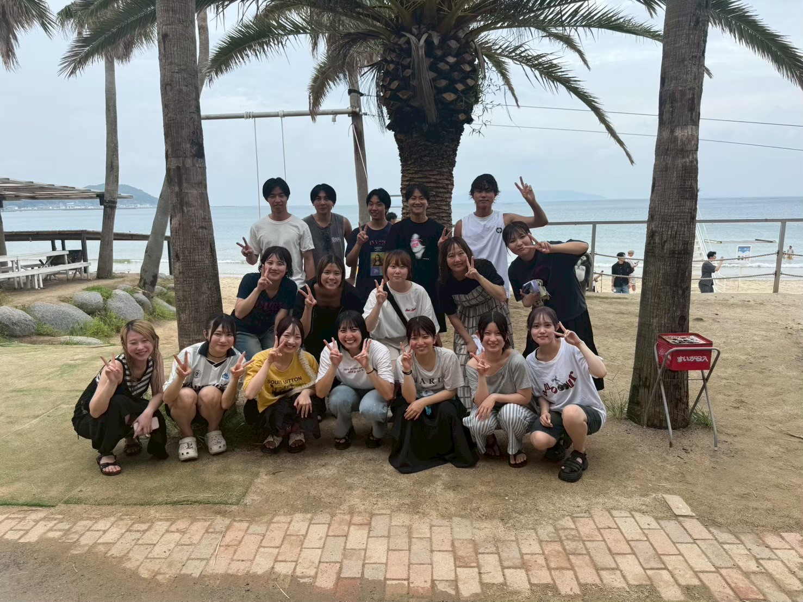

これまで一緒に過ごしてくれてありがとう。
それぞれの道へ進むみんなへ、
少しだけ言葉を残しました。
名前を選んでください。
伊藤賢太
桑原海人
横田悠悟
札本大
長田青空
堀ノ江樹
渡辺羽南
伊勢南美
坂田菜奈
金田美紅
大久保明音
中島望晴
増永泰助
河口省吾
南里優菜
中村藍
瀬戸口真那
境亜衣莉
野崎麗
檜室圭輝
土田真司
田川久和
橋口義央
福井乃彩
片淵七虹
藤元菜々美
吉岡ゆつき
松尾優樹
宮原里恋
草野未祐

集合写真これしか持ってなかった！写ってない人ごめんね！
番号を入力してください
決定